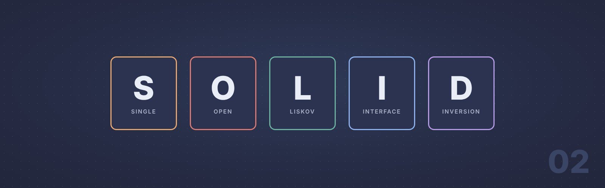

Unit 2: SOLID Principles of Object-Oriented Design
In brief: I refactored a shopping cart from one class that did everything into small classes that follow the SOLID principles, with 38 tests. The principles turned out to be the design patterns from the reading seen from another angle, and the hardest one to keep, Liskov substitution, could only be protected by tests, not by the class hierarchy.

This unit covers the five SOLID principles of object-oriented design: single responsibility, open/closed, Liskov substitution, interface segregation and dependency inversion. It looks at how they keep real systems maintainable and scalable, and the case study refactors a poorly designed online shopping system in Python so that it follows all five. The original code, the refactored design, its tests and a walkthrough notebook are stored below as the unit’s artefact, followed by my reading notes and seminar preparation.
Reflection
Structured using the What? So what? Now what? model (Rolfe, Freshwater and Jasper, 2001).
What?
Unit 2 introduced the SOLID principles. I read chapters 3 and 12 to 19 of Sridhar, Indumathi and Hariharan (2023), sections 2 to 4 of Marcotte (2022), chapters 3 to 7 of Ayeva and Kasampalis (2024) and Yanakiev, Lazar and Capiluppi (2025). For the case study I refactored the brief’s Order class, which held a cart, totalled it and took payments, into an Order, Discount and PaymentMethod families, a PaymentProcessor and a RefundService, with 38 tests (Artefact 1).
So what?
I had been treating SOLID and design patterns as separate topics. Marcotte (2022, ch. 6) presents Strategy as an almost free route to the open/closed principle, and my PaymentMethod family is exactly that: injecting the strategy, which Marcotte (2022, ch. 7) treats as the practical form of dependency inversion, removed the if payment_type == "credit" chain. Ayeva and Kasampalis (2024, ch. 5) note that in Python a strategy can simply be a function. I kept discounts as classes because each validates its settings and carries a contract, but that is a choice to defend, not a default.
The brief’s dependency inversion step did not match what I found. After the SRP split, Order no longer depended on payment at all; the dependency to invert ran from the processor to the payment providers. Drawing the dependencies (Figure 1) showed this where following the steps in order did not.
Liskov substitution taught me most. Sridhar, Indumathi and Hariharan (2023, ch. 14) define overriding by signature, whereas Liskov and Wing (1994) define subtyping by behaviour, or as Martin (2000, p. 11) puts it, derived methods ‘expect no more and provide no less’. A card payment that raises an error for orders under £10 overrides correctly by the first definition, yet broke checkout. Making pay() a template method did not prevent this, since Python cannot stop a subclass overriding it, and Marcotte (2022, ch. 10) admits the same of Template Method. Only the contract tests run against every subclass protected substitutability.
Refunds raised interface segregation. Putting refund() on every payment method would have forced CryptoPayment into an empty implementation, so Refundable became a separate protocol that mypy checks structurally (Levkivskyi, Lehtosalo and Langa, 2017). My first version still tested isinstance inside the processor, the ‘ugly fix’ Martin (2000, pp. 11–12) shows breaking the open/closed principle, so I moved refunds into their own service.
Was it worth it? Two classes became fifteen. Marcotte (2022, ch. 11) calls principles ‘ideals not applicable in every scenario; not laws’, and I left PaymentResult concrete as a stable data holder. Yanakiev, Lazar and Capiluppi (2025) show the same judgement at ASML: they used existing metrics to choose three legacy components and turned dependency inversion into seven refactoring patterns, removing half the illegal dependencies, but shared components stalled on cross-team agreement. Marcotte (2022, ch. 12) likewise applies dependency inversion to whole layers while marking LSP ‘N/A’ at that scale. Dependency inversion scales up; Liskov substitution stays in the class, where only tests guard it.
From a security angle, the original pay() printed instead of returning a result, silently ignored unknown payment types and used floats that produced negative or inexact totals. The refactor fixes these and keeps only a card’s last four digits, though a class-wide reference counter remains, the static state Marcotte (2022, ch. 6) warns against.
Now what?
I will document each abstraction’s contract and run one set of contract tests over all its implementations, continuing my Unit 1 plan. Before applying OCP or DIP I will ask what is actually likely to change. I will rewrite the discounts as functions to compare the two forms of Strategy, and replace the reference counter with an injected generator. Before Unit 3 I will read the SOLID chapters I lacked: Marcotte (2022) chapter 3, Ayeva and Kasampalis (2024) chapter 2 and Martin (2023) chapters 12 and 16.
Artefact 1: Refactoring a Shopping Cart to the SOLID Principles
Case study activity. The original design in shop_initial.py, the refactored design in shop_solid.py, 38 unit tests and the doctests of both modules in test_shop.py, and a walkthrough notebook: unit2_solid_refactor.ipynb. Needs Python 3.10 or later and no third-party packages; run the tests with python -m unittest -v test_shop. shop_solid.py also passes mypy --strict.
The brief gave a single Order class that holds items, totals them and takes payment through an if/elif chain on a payment type string. I kept it almost as given, adding only an Item class so that it runs and an apply_discount() method so that it meets the discount requirement:
class Order:
def add_item(self, item): ...
def apply_discount(self, discount_type, value): ... # "percent" or "fixed"
def calculate_total(self): ...
def pay(self, payment_type):
if payment_type == "credit":
print("Processing credit card payment...")
elif payment_type == "paypal":
print("Processing PayPal payment...")The refactored design splits it by responsibility and puts the two things that vary, payment methods and discounts, behind abstractions. Figure 1 shows the classes and how they depend on each other.
![UML class diagram of the refactored shopping system. Order owns Products and uses the abstract Discount, which NoDiscount, PercentageDiscount and FixedAmountDiscount extend. PaymentProcessor checks out an Order and has an abstract PaymentMethod injected. CryptoPayment and the abstract _RefundablePayment extend PaymentMethod; CreditCardPayment and PayPalPayment extend _RefundablePayment, which implements the Refundable protocol. RefundService has a Refundable injected. PaymentMethod returns a PaymentResult.](artefacts/unit2/figures/u2_class_diagram.png)
Figure 1: Class diagram of the refactored shopping system.
Table 1 maps each principle to the problem in the original code, the change made, and the test or notebook result that shows it.
| Principle | Problem in the original | Change | Evidence |
|---|---|---|---|
| Single responsibility | Order holds items, totals them, applies discounts and takes payment | Order keeps items and totals; discounts, payment methods and checkout are separate classes | Order has no member that mentions payment; its tests need no payment objects |
| Open/closed | A new payment type or discount means a new branch in Order | New behaviour is a new PaymentMethod or Discount subclass | A bank transfer and a buy-one-get-one-free discount defined in the tests work with no change to existing code; PaymentProcessor names no concrete class |
| Liskov substitution | No contract for what a payment does or returns | pay() is a template method with a stated contract; declines are results, not exceptions | The same contract tests pass for every payment method; a subclass that raises for small orders breaks checkout, and its substitutable version does not |
| Interface segregation | (Would arise if refunds were added to every payment method) | Refundable is a separate protocol; CryptoPayment does not implement it | RefundService refuses a crypto payment at run time, and mypy rejects it before the code runs |
| Dependency inversion | Order handles each concrete payment type inline | PaymentProcessor and RefundService receive their payment method through the constructor | A recording test double stands in for a real provider and shows the exact amount charged |
Table 1: Each SOLID principle in the case study and the evidence for it.
An extract of the notebook’s output shows the original’s silent faults, and then the refactored processor giving the same answer with every payment method it is handed:
Total: 0.30000000000000004
pay('applepay') printed '' and returned None
Pencil with £5 off: -3.0
credit card ending 1111 succeeded=True £9.18 ref=CRED-000001 (card payment authorised)
PayPal (s***@example.com) succeeded=True £9.18 ref=PAYP-000002 (PayPal payment completed)
crypto wallet 0xA1B2... succeeded=True £9.18 ref=CRYP-000003 (sent 0.00018360 coins)
CreditCardPayment -> True card payment authorised
MinimumSpendCardPayment -> ValueError: minimum card spend is £10The last two lines are the Liskov substitution failure discussed in the reflection. Both classes override correctly in the syntactic sense, but only one can be substituted for its parent.
Reading Notes
Sridhar, Indumathi and Hariharan (2023), chapters 3 and 12–19 (required). A broad Python textbook. Chapter 3 covers the language basics and data types. Chapters 12 to 14 cover classes, constructors and destructors, the forms of inheritance, method overriding and abstract base classes, where an abstract class is described as a way to define a common interface for a set of subclasses. Chapters 15 to 19 move on to modules, exceptions, debugging and testing with doctest, unittest and pytest, file handling and GUIs. The book does not discuss SOLID by name. Its value this week was the Python mechanics the refactor relies on, and its definition of overriding, which is purely about signatures, turned out to be a useful contrast with the behavioural definition behind LSP.
Marcotte (2022), sections 2–4, chapters 4–16 (required). Written for ASP.NET Core in C#, but the design reasoning carries across. Each pattern chapter ends by scoring the pattern against the five principles, which is the most useful habit I took from it. Chapter 6 presents Strategy as the route to the open/closed principle and argues that Singleton breaks every principle except LSP. Chapter 7 treats dependency injection as the working form of dependency inversion, separates stable from volatile dependencies, and argues for composition over inheritance. Chapters 9 to 11 cover Decorator, Composite, Adapter, Template Method, Chain of Responsibility and Operation Result, and the last of these admits to letting minor breaches of ISP and DIP slide where the design stays simpler. Section 4 (chapters 12 to 16) applies the same scoring at application and cloud scale: layering and Clean Architecture, object mappers, Mediator and CQRS, vertical slices and microservices. Abstract layers are presented as dependency inversion applied to a whole layer, and LSP is marked as not applicable at these scales. Chapter 3, which covers SOLID directly, was not available to me this week.
Ayeva and Kasampalis (2024), chapters 3–7 (recommended). The Gang of Four patterns in Python, then architectural and concurrency patterns. Chapter 3 covers the creational patterns and chapter 4 the structural ones, including a protection proxy that guards sensitive data. Chapter 5 covers the behavioural patterns, including Strategy and Template. Chapter 6 covers architectural patterns such as MVC and microservices, and chapter 7 concurrency and asynchronous patterns. SOLID is not named in these chapters. The most useful point for this unit was that Python’s first-class functions often make a class per strategy unnecessary, with sorted() and its key argument as the standard example.
Yanakiev, Lazar and Capiluppi (2025) (additional). An experience report from ASML on refactoring legacy C/C++ with two decades of architectural technical debt. The authors used the metrics already available to choose three components, defined ‘illegal dependencies’ as those that break the intended layering, and turned dependency inversion into seven refactoring patterns applied across a codebase of more than 5,000 files. They removed half of the illegal dependencies and cut the illegally used symbols by more than 85%. They are open about the limits: shared components needed several teams to agree, and the results come from one company’s context.
Not yet read. Martin (2023) section 5 (chapter 16, a review of design patterns from a functional point of view; the SOLID chapter is chapter 12), Marcotte (2022) chapter 3 and Ayeva and Kasampalis (2024) chapter 2, the chapters on SOLID itself. All three are planned before the design pattern units.
Seminar Preparation
Environment. Python 3.13 with unittest, Jupyter and mypy, used for the case study above. The original and refactored versions sit side by side so the refactor can be walked through one principle at a time during the hands-on session.
Refactoring practice. The case study is my main practice piece. The steps I followed, which I will bring to the session, were: write tests that pin down the original behaviour and its faults; separate responsibilities; find what varies and put it behind an abstraction; state each abstraction’s contract and test every implementation against it; and inject dependencies at the point where objects are put together.
Questions to bring.
- The brief says
Ordershould stop depending onPaymentProcessor, but after the SRP split it no longer did. Is the intended inversion the one between the processor and the payment methods? - Python cannot stop a subclass overriding a template method. Are contract tests the accepted way to enforce LSP in Python, or is there a better tool?
- When does SRP start to cost more than it saves, in performance or in the effort of following a call through many small classes?
- Is a
typing.Protocolenough for interface segregation, or are there cases where an abstract base class is still the better choice? - How do we decide whether a dependency is stable enough to use directly, as I did with
PaymentResult, rather than through an abstraction?
References
Ayeva, K. and Kasampalis, S. (2024) Mastering Python design patterns: craft essential Python patterns by following core design principles. 3rd edn. Birmingham: Packt Publishing. Chapters 3–7. Available at: https://www.oreilly.com/library/view/mastering-python-design/9781837639618/ (Accessed: 27 November 2026).
Levkivskyi, I., Lehtosalo, J. and Langa, Ł. (2017) PEP 544: Protocols: structural subtyping (static duck typing). Python Software Foundation. Available at: https://peps.python.org/pep-0544/ (Accessed: 27 November 2026).
Liskov, B.H. and Wing, J.M. (1994) ‘A behavioral notion of subtyping’, ACM Transactions on Programming Languages and Systems, 16(6), pp. 1811–1841. Available at: https://doi.org/10.1145/197320.197383 (Accessed: 20 October 2026).
Marcotte, C.-H. (2022) An atypical ASP.NET Core 6 design patterns guide: a SOLID adventure into architectural principles and design patterns using .NET 6 and C# 10. 2nd edn. Birmingham: Packt Publishing. Sections 2–4. Available at: https://www.oreilly.com/library/view/an-atypical-asp-net/9781803249841/ (Accessed: 27 November 2026).
Martin, R.C. (2000) Design principles and design patterns. Object Mentor. Available at: https://eli.sdsu.edu/courses/fall19/cs635/Principles_and_Patterns.pdf (Accessed: 27 November 2026).
Martin, R.C. (2023) Functional design: principles, patterns, and practices. Boston, MA: Addison-Wesley Professional. Available at: https://www.oreilly.com/library/view/functional-design-principles/9780138176518/ (Accessed: 27 November 2026).
Rolfe, G., Freshwater, D. and Jasper, M. (2001) Critical reflection for nursing and the helping professions: a user’s guide. Basingstoke: Palgrave Macmillan.
Sridhar, S., Indumathi, J. and Hariharan, V.M. (2023) Python programming. Pearson India. Chapters 3 and 12–19. Available at: https://www.oreilly.com/library/view/python-programming-by/9789357053303/ (Accessed: 27 November 2026).
Yanakiev, I., Lazar, B.-M. and Capiluppi, A. (2025) ‘Applying SOLID principles for the refactoring of legacy code: an experience report’, Journal of Systems and Software, 220, 112254. Available at: https://doi.org/10.1016/j.jss.2024.112254 (Accessed: 27 November 2026).